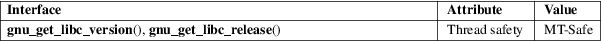

gnu_get_libc_version, gnu_get_libc_release − get glibc version and release
Standard C library (libc, −lc)
#include <gnu/libc−version.h>
const char
*gnu_get_libc_version(void);
const char *gnu_get_libc_release(void);
The function gnu_get_libc_version() returns a string that identifies the glibc version available on the system.
The function gnu_get_libc_release() returns a string indicates the release status of the glibc version available on the system. This will be a string such as stable.
For an explanation of the terms used in this section, see attributes(7).

GNU.
glibc 2.1.
When run, the program below will produce output such as the following:
$
./a.out
GNU libc version: 2.8
GNU libc release: stable
Program
source
#include <stdio.h>
#include <stdlib.h>
#include <gnu/libc−version.h>
int
main(void)
{
printf("GNU libc version: %s\n",
gnu_get_libc_version());
printf("GNU libc release: %s\n",
gnu_get_libc_release());
exit(EXIT_SUCCESS);
}
confstr(3)